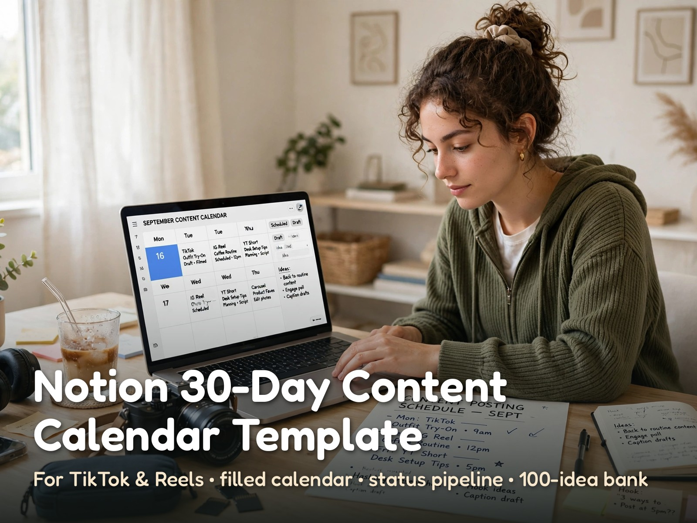

$19 USD — instant download
Notion 30-Day Content Calendar Template for TikTok & Reels — Filled Calendar, Status Pipeline & 100-Idea Bank
Get it on Gumroad‘What do I post today?’ is the question that kills more channels than any algorithm. This template answers it inside Notion, where the plan stays alive instead of sitting in a static file: drag an idea onto a date, move it through the pipeline as you film, and watch the month fill up. It is the Notion edition of the Tmk Studio 30-Day Content Calendar, rebuilt as working databases — same weekly rhythm, same idea bank, now with calendar and board views that update as you work.
The 30-day calendar database lays out a month of posting days in calendar and list views, each entry carrying its format (teach, story, ranking, review, challenge), topic and hook angle; the weekly rhythm of two teaching posts, a story, a list, a trust-builder, a community post and a results day keeps the month varied for viewers and predictable for you. The status pipeline board moves every post from Idea → Scripted → Filmed → Posted, so you always know what is stuck and where. A second database comes pre-loaded with a 100-idea bank in ten tagged categories — tutorials, mistakes, behind the scenes, hot takes, rankings, community, stories, reviews, experiments and evergreen angles — filterable by category and ready to drag into the calendar.
Buy on Gumroad and download the PDF instantly. The PDF contains your template link: open it, click Duplicate in the top-right corner, and the whole system copies into your own Notion workspace â yours to edit, forever. You only need a free Notion account; everything in this template works on Notion's free plan, on phone, tablet and desktop. A getting-started page inside gets you set up in minutes: pick your posting days, load your first week from the idea bank, and start moving cards.
A weekly planning page holds this week's posts, the opening hook line for each, and a filmed/posted checklist. The batching system page explains how three sittings a week — script, film, edit — carry seven posts, as a step-by-step checklist with a bad-week protocol for when life intervenes. The weekly review page covers the five metrics that matter, what each one actually tells you, and a monthly retro that designs your next month. It is built for TikTok, Reels and Shorts creators who post in bursts and then go quiet — anyone whose bottleneck is deciding, not filming. A calendar makes posting consistent; it cannot make posts good or guarantee an audience. What it removes is the daily decision and the blank page.
This is a digital download — no physical item will be shipped. For personal use; please do not redistribute or resell the file.